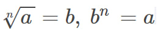

Властивості кореня n-го степеня
Коренем n-го степеня з числа а називається таке число, n-й степінь якого дорівнює а, тобто:
Теорія
Знаходження кореня n-го степеня з числа а називають добуванням кореня n-го степеня, число а називають відкореневим числом, а число n - показником кореня